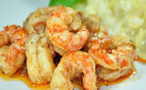

|
LAGOSTIM

Massa:
- 1 kg de lagostim
- 2 tomates
- 5 dentes de alho
- sal e pimenta a gosto
- suco de 3 limões
- 1 colher de manteiga
- 1 colher de azeite
- leite de coco
- 1 colher de molho de tomate
Recheio:
- Primeiro limpe o lagostim, tirando as barbatanas;
- Banhe com o suco de 2 limões;
- Coloque água na panela até cobrir o lagostim e cozinhar por 10 minutos;
- Depois de cozidos retire as cascas;
- Depois de fervidos e descascados coloque em uma vasilha e acrescente o alho picado,
suco de 1 limão, sal, pimenta e deixe descansar por 5 minutos.
Coloque a manteiga e o azeite numa panela (grossa), acrescente os lagostim e deixe dourar um pouco;
- Acrescente o tomate, refogue o leite de coco e o molho de tomate;
- Deixe ferver e está pronto.
|